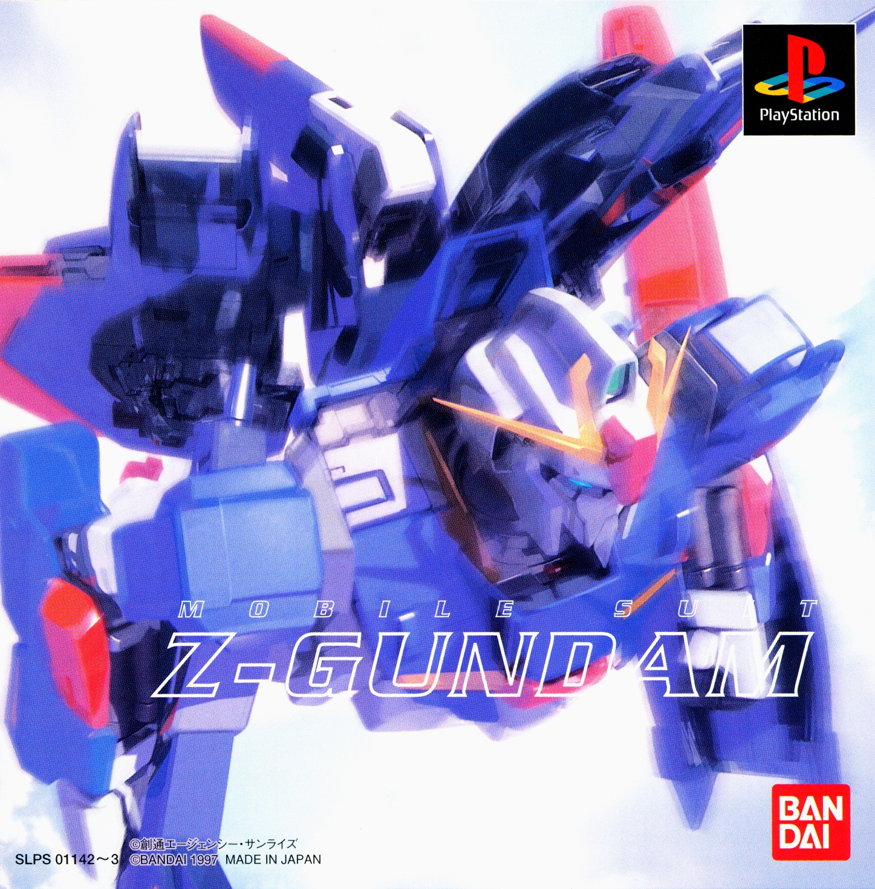
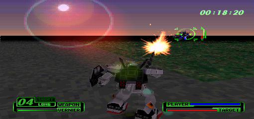
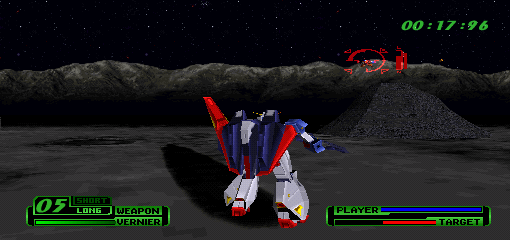
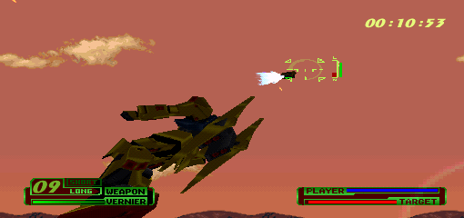
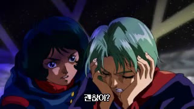
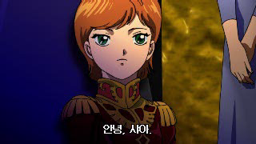
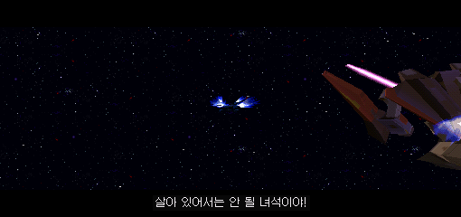
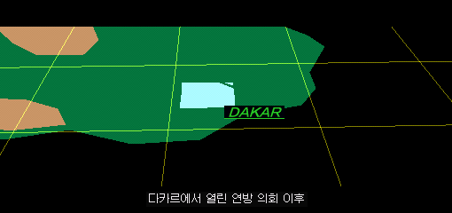
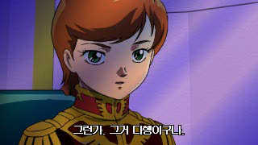
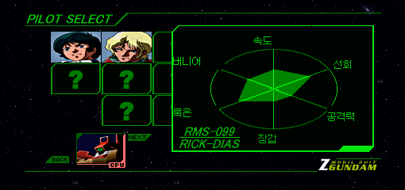

전체 ZIP · 적용 도구 포함처음 적용하는 분께 권장
Gundam_Z_Korean_Patch.zip공개 다운로드 준비 중242.21 MB · Windows 적용 도구·두 편 패치
기동전사
카미유와 샤아, 두 사람의 이야기를 한국어로.
작전 브리핑부터 전투 속 대화, 애니메이션까지.
두 편의 이야기를 한국어 자막으로 따라가세요.

01 / ABOUT THE PATCH
영상·게임 내 대화 자막, 3D 작전 설명,
스테이지 제목과 일본어 메뉴를 한국어로 바꿨습니다.
02 / IN GAME
이미지를 누르면 크게 볼 수 있습니다.

확대
확대
확대
확대
확대
확대
확대
확대
확대패치 적용본의 전투 화면과 자막 예시입니다. 화면 확대 시 원본 해상도에 따른 픽셀이 보일 수 있습니다.
03 / INSTALLATION
Windows 64비트용 적용 도구가
패치 ZIP에 포함되어 있습니다.
카미유편: Disc 1 CUE · BIN 12개
샤아편: Disc 2 CUE · BIN 17개
음악 트랙까지 같은 폴더에 준비하세요.
적용 도구가 포함된 전체 ZIP을 받은 뒤 원하는 폴더에 압축 해제하세요.
Gundam_Z_Korean_Patch.zip아래 파일을 실행해 카미유편 또는 샤아편의 원본 CUE를 선택하세요. CUE를 이 파일 위로 끌어 놓아도 됩니다. 선택한 편을 자동으로 구분합니다.
Apply_Korean_Patch.cmdPatched_KO 폴더에 생성된 새 CUE를 PS1 에뮬레이터에서 여세요. 다른 편도 같은 방법으로 적용할 수 있습니다.
새 CUE는 원본 폴더의 음악 BIN을 읽습니다. 원본 폴더를 같은 경로에 유지하세요.
새 CUE로 부팅하고, 에뮬레이터의 메모리카드 설정에서 기존 카드를 연결해 게임 내 저장을 불러오세요.
히든 캐릭터를 제외한 모든 캐릭터를 배틀 모드에서 사용하려면 카미유편과 샤아편의 세이브 데이터를 연동해야 합니다.
두 편에서 같은 메모리카드의 게임 내 저장 데이터를 사용하세요. 먼저 기존 세이브를 백업하고 게임을 종료한 뒤 설정합니다. 설정 후에는 게임을 새로 부팅해 저장 데이터를 불러오세요.
메뉴 이름은 버전에 따라 다를 수 있습니다. DuckStation 공식 메모리카드 설정 근거
두 편을 하나의 M3U 목록으로 실행하면 같은 이름의 세이브를 사용하기 편합니다.
ZGundam_KO.m3u를 만들고 아래 두 줄을 저장합니다. 파일 이름이나 폴더가 다르면 실제 CUE의 상대 경로로 적으세요.ZGundam_KO_Disc1.cue
ZGundam_KO_Disc2.cueMemory Card 0 Method = libretro, Shared Memory Cards = disabled로 설정하고 콘텐츠를 종료합니다..srm을 복사해 ZGundam_KO.srm으로 둡니다. 같은 이름의 파일이 있으면 먼저 별도 백업하세요.ZGundam_KO.m3u를 Beetle PSX로 엽니다. 다른 편으로 바꿀 때는 빠른 메뉴 → 디스크 제어에서 꺼내기 → 디스크 선택 → 삽입을 하고 게임을 재시작합니다.이후 두 편 모두 이 M3U를 통해 실행하고 게임 내 저장을 사용하세요.
같은 에뮬레이터에서 게임별 세이브 파일을 사용하는 경우에는 기존 세이브를 다른 편의 이름으로 복사해 불러올 수 있습니다. 원본 이름은 그대로 두고 복사본만 바꾸세요.
Beetle PSX 기본 .srm 설정에서 각 CUE를 따로 실행하는 예
기존 파일은 보관:
ZGundam_KO_Disc1.srm
복사본의 이름을 변경:
ZGundam_KO_Disc2.srm실제 실행 파일명이 다르면 그 이름에 맞추세요. DuckStation의 게임별 카드는 ROM 이름과 카드 이름이 다를 수 있으므로, 실제 생성된 .mcd 파일명을 기준으로 합니다. 확장자는 그대로 유지하세요.
이 방법은 일회성 복사입니다. 다른 편으로 돌아갈 때도 최신 기록을 이어 쓰려면 최신 세이브의 복사본을 그 편의 파일명에 맞춰 옮겨야 합니다. 두 파일이 자동으로 동기화되지는 않습니다.
이미 두 편을 따로 저장했다면: 이름을 맞춰 복사하면 한쪽 기록을 다른 편에서 불러올 수 있지만, 두 플레이 기록을 합치는 기능은 아닙니다. 두 원본을 보관하고 이어 쓸 카드를 정해 사용하세요. 연동 확인은 자동 이어하기·강제 저장 불러오기 대신 게임을 새로 부팅한 상태에서 합니다. 히든 캐릭터는 이 안내의 해금 대상에서 제외됩니다.
04 / DOWNLOAD
최종 검수본 · 2026.10.14
일본판 원본에 적용하는 xdelta 패치입니다.
게임 원본과 BIOS는 포함하지 않습니다.
Gundam_Z_Korean_Patch.zip공개 다운로드 준비 중242.21 MB · Windows 적용 도구·두 편 패치
ZGundam_KO_Disc1.xdelta공개 다운로드 준비 중127.10 MB · 해당 원본 Track 01 BIN에 적용
ZGundam_KO_Disc2.xdelta공개 다운로드 준비 중121.84 MB · 해당 원본 Track 01 BIN에 적용
공개 다운로드를 준비하고 있습니다.
배포 내역 보기527b1db53917c89011fc4a7441a657829dd915c131ec021ec83d556d0cfc5ff005 / BEFORE YOU PLAY
Mobile Suit Z-Gundam (Japan)의 멀티 트랙 BIN/CUE를 지원합니다. 카미유편은 Disc 1(SLPS-01142), 샤아편은 Disc 2(SLPS-01143)입니다.
각 디스크의 Track 01에 패치를 적용합니다. CHD·ISO·트랙을 합친 단일 BIN에는 직접 적용할 수 없습니다. 적용 도구가 원본과 결과 파일의 해시를 확인합니다.
96c3db6e608213385cd38638d6053029b31e4989260497d38ae56f79a4f8d22d5b0972e00e33cf0d06bc552cc383695a700a32cec5a09e4894b02dd286df50d9원하는 편만 적용할 수 있습니다. 적용 도구에서 해당 편의 원본 CUE를 고르면 자동으로 판별합니다. 두 편을 플레이하려면 각 원본에 한 번씩 적용하세요.
배틀 모드에서 히든 캐릭터를 제외한 모든 캐릭터를 사용하려면 카미유편과 샤아편의 세이브 데이터를 연동해야 합니다.
음악 BIN은 원본 그대로 사용합니다. 생성된 CUE는 원본 음악 파일의 경로를 참조하므로 원본 폴더를 같은 경로에 두세요.
네. 개별 .xdelta를 선택하고 해당 디스크의 원본 Track 01 BIN에 적용하세요. 출력은 새 BIN으로 지정합니다.
원본 CUE의 첫 FILE 항목을 새 BIN 이름으로 수정하고 음악 트랙 경로도 맞춰야 합니다. 동봉 적용 도구를 사용하면 이 과정이 자동으로 처리됩니다.
CUE/BIN을 지원하는 PS1 에뮬레이터에서 실행하세요. Beetle PSX와 DuckStation에서 사용자 플레이 검수를 완료했습니다. 자동 실행·화면 비교에는 SwanStation을 사용했습니다.
패치 적용 후 CHD로 변환할 때도 새 CUE가 참조하는 모든 음악 BIN을 읽을 수 있어야 합니다.
카미유편과 샤아편의 사용자 영상·대화 및 플레이 검수를 마치고 수정사항을 반영했습니다. 번역, 누락 발화, 화자 구분과 자막 표시 시점을 확인했습니다.
원본에 두 패치를 실제 적용한 결과가 최종 검수본의 SHA-256과 각각 일치했습니다. 전체 음악 트랙과 CUE 인덱스도 유지했습니다.
원본 CUE에 적힌 이름과 BIN 파일 이름을 확인하고, 지원 원본과 파일 해시가 같은지 확인하세요. 원본과 기존 출력 파일은 덮어쓰지 않으므로 이미 적용한 파일이 있다면 새 출력 폴더를 지정하세요.
자세한 안내와 원본 목록은 ZIP의 README_KO.txt와 manifest.json에 있습니다.